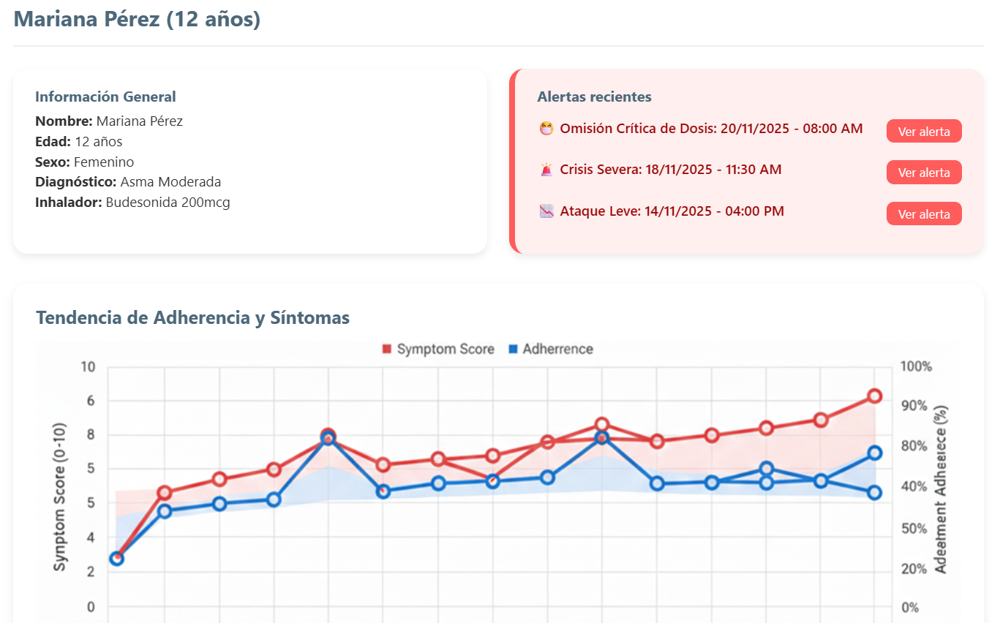
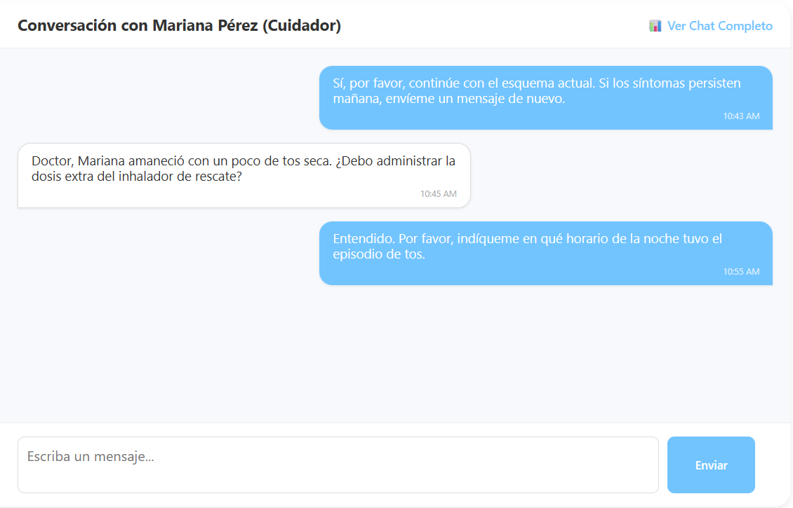
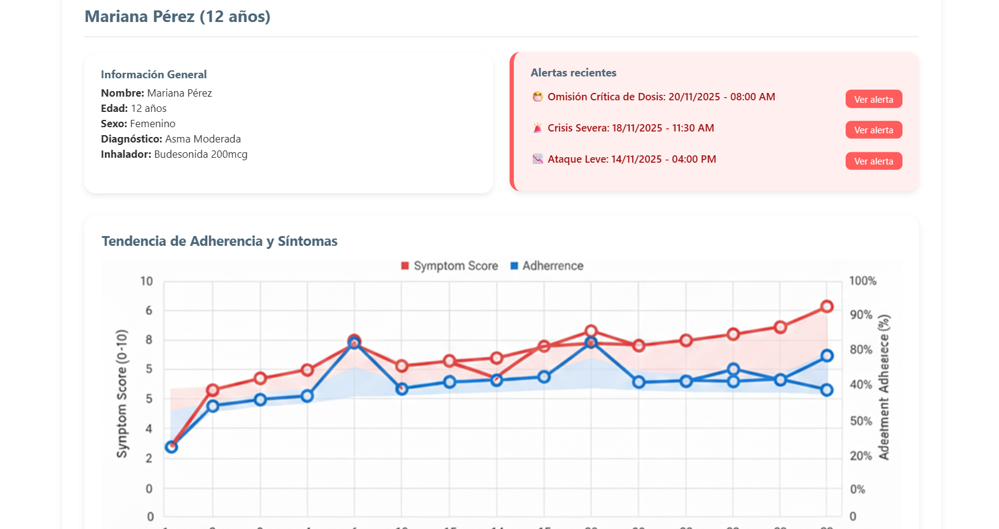

AsthmaControl transforma la adherencia de sus pacientes en información clínica actionable, mejorando la toma de decisiones y la eficiencia de sus consultas.
Vea gráficas detalladas sobre la administración de dosis (tomadas vs. perdidas) para identificar patrones de riesgo o falta de cumplimiento inmediatamente.
Envíe mensajes, alertas de ajuste de dosis o recordatorios específicos directamente al móvil del paciente, manteniendo un registro clínico seguro.
Genere informes exportables sobre el historial de síntomas y uso del medicamento, haciendo que las evaluaciones periódicas sean rápidas y objetivas.
Explore de forma interactiva el entorno que le proporcionará datos clave sobre la evolución y el manejo del asma en sus pacientes.
Ver Simulación del Panel Médico